컴퓨터활용능력-1급 (2009-04-19 기출문제)
1과목: 컴퓨터 일반
1. 다음 중 한글 Windows XP에서 파일 시스템으로 사용하는 NTFS에 관한 설명으로 옳지 않은 것은?
- 플로피 디스크에 사용할 수 없다.
- 2TB보다 큰 볼륨도 가능하다.
- 보안과 압축 기능이 추가되어 속도 면에서는 느려진 파일 시스템이다.
- 파일 크기는 볼륨 크기에 의해서만 제한된다.
(정답률: 57%)

2. 다음 중 전자 우편(E-mail)의 송/수신에 사용되는 프로토콜로 옳지 않은 것은?
- IMAP(internet messaging access protocol)
- SMTP(simple mail transfer protocol)
- PPP(Point-to-Point Protocol)
- POP3(Post Office Protocol 3)
(정답률: 79%)
3. 다음 중 한글 Windows XP에서 프린터 설치에 관한 설명으로 옳지 않은 것은?
- [프린터 추가 마법사]를 실행하여 새로운 프린터를 로컬 프린터의 네트워크 프린터로 구분하여 설치할 수 있다.
- 새로운 프린터를 설치하는 과정에서 네트워크 프린터를 기본 프린터로 설정하려면 반드시 스풀링의 설정이 필요하다.
- 여러 개의 프린터를 한 대의 컴퓨터에 설치할 수 있고, 한대의 프린터를 네트워크로 공유하여 여러 대의 컴퓨터에서 사용할 수 있다.
- 기본 프린터는 한대만 지정할 수 있으며, 기본 프린터로 설정된 프린터도 삭제할 수 있다.
(정답률: 72%)
4. 다음 중 한글 Windows XP에서 [명령 프롬프트]창에 관한 설명으로 옳지 않은 것은?
- [명령 프롬프트] 창의 화면에 표시하는 텍스트의 글꼴과 색상을 변경할 수 있다.
- [명령 프롬프트] 창에서 표시된 텍스트를 다른 문서에 복사할 수 있다.
- [명령 프롬프트]의 기본 창 화면과 전체 화면 창을 서로 전환하려면 <Ctrl> + <Enter> 키를 사용한다.
- [명령 프롬프트] 창을 종료하려면 exit 명령어를 입력한다.
(정답률: 56%)
5. 다음 중 데이터 통신을 위하여 사용되는 통신망에 관한 설명으로 옳지 않은 것은?
- LAN은 자원 공유를 목적으로 하는 근거리 통신망으로 높은 에러 발생율 때문에 저속 전송으로 안전성을 보장하는 통신망이다.
- VAN은 기간 통신 사업자로부터 통신 회선을 임대하여 기존의 정보에 새로운 가치를 더하여 다수의 이용자에게 판매하는 통신망이다.
- B ISDN은 광대역 네트워크에서 데이터, 음성, 고해상도의 동영상 등 다양한 서비스를 디지털 통신망을 이용하여 제공하는 고속 통신망이다.
- WLL은 전화국 가입자 단말 사이의 회선을 유선 대신에 무선으로 구성하는 통신망이다.
(정답률: 57%)
6. 다음 중 컴퓨터 바이러스의 예방 방법으로 가장 옳지 않은 것은?
- 새로운 프로그램을 사용할 때는 최신 버전의 백신 프로그램으로 바이러스의 감염 여부를 검사한 후에 사용한다.
- 중요한 프로그램이나 자료는 항상 주기적으로 백업을 한다.
- 백신 프로그램의 시스템 감시 및 인터넷 감시 기능을 이용하여 바이러스를 사전에 검색한다.
- 바이러스에 감염된 것으로 예상되는 모든 프로그램이나 자료를 삭제한다.
(정답률: 73%)
7. 다음 중 멀티미디어와 관련하여 비디오 데이터에 관한 설명으로 옳지 않은 것은?
- AVI는 동영상 압축 고화질 파일형식으로, 비표준 동영상 파일 형식이며 Windows Media Player로만 재생이 가능하다.
- MPEG은 동영상 전문가 그룹에서 제정한 동영상 압축 기술에 관한 국제 표준 규격으로 동영상뿐만 아니라 오디오 데이터도 압축할 수 있다.
- ASF는 MS사에서 개발한 통합 멀티미디어 형식으로 용량이 작고 음질이 뛰어나 주로 스트리밍 서비스를 하는 인터넷 방송국에서 사용된다.
- Quick Time MOV는 Apple사에서 개발한 JPEG 압축 방식의 동영상 압축 기술로 Windows에서 재생하려면 Quick Time for Windows 프로그램을 설치해야만 한다.
(정답률: 60%)
8. 다음 중 정보 통신을 위한 네트워크 구성 방식으로 스타(Star)형 구성 방식에 관한 설명으로 옳은 것은?
- 서로 이웃하는 컴퓨터들끼리 원형을 이루도록 연결하는 방식이다.
- 모든 지점의 컴퓨터와 단말 장치를 서로 연결한 형태이다.
- 하나의 통신 회선에 여러 대의 컴퓨터를 접속하는 방식으로 컴퓨터의 증설이나 삭제가 용이한 통신망 구성 방식이다.
- 중앙 컴퓨터 또는 교환기를 중심으로 주위의 컴퓨터들과 1:1로 접속하는 방식이다.
(정답률: 50%)
9. 한글 Windows XP에서 [시스템 등록 정보] 창에 관한 설명으로 옳지 않은 것은?
- [일반] 탭에서 Windows의 버전과 사용자 정보, CPU의 종류, RAM의 크기를 설정할 수 있다.
- [컴퓨터 이름] 탭에서는 컴퓨터의 이름, 작업 그룹 등을 확인하거나 변경할 수 있다.
- [시스템 복원] 탭에서는 시스템 복원의 사용 유무 및 시스템 복원에 사용할 디스크 공간을 확인하거나 설정값을 지정할 수 있다.
- [하드웨어] 탭에서는 [장치 관리자] 항목을 이용하여 시스템에 설치되어 있는 하드웨어의 종류 및 작동 여부를 확인할 수 있다.
(정답률: 50%)
10. 다음의 컴퓨터의 입/출력 방식에서 DMA방식 설명이다. 다음 중 설명이 맞는 것은 무엇인가?
- 중앙 처리 장치의 간섭 없이 DMA 장치를 사용하여 주기억 장치와 직접 입/출력한다.
- 중앙 처리 장치에 의해서 DMA 장치를 사용하여 주기억장치와 직접 입/출력한다.
- 중앙 처리 장치의 간섭 없이 입/출력 채널이 주기억 장치와 직접 입/출력한다.
- 중앙 처리 장치에 의해서 입/출력 채널이 주기억 장치와 직접 입/출력한다.
(정답률: 41%)
11. 다음 중 컴퓨터의 메인 보드와 관련된 설명으로 옳지 않은 것은?
- 칩셋(Chip Set)은 사우스 브리지와 노스 브리지 칩셋으로 구성되며 메인 보드를 관리하기 위한 정보와 각 장치를 지원하기 위한 정보가 들어 있다.
- 메인 보드의 버스(Bus)는 컴퓨터에서 데이터를 주고 받는 통로로, 사용 용도에 따라 내부 버스, 외부 버스, 확장 버스가 있다.
- 포트(Port)는 메인 보드와 주변장치를 연결하기 위한 접속 장치로 직렬 포트, 병렬 포트, PS/2 포트, USB포트 등이 있다.
- 바이오스(BIOS)는 컴퓨터의 기본 입출력 장치나 메모리 등의 하드웨어 작동에 필요한 명령을 모아놓은 프로그램으로 RAM에 위치한다.
(정답률: 73%)
12. 다음 중 인터넷 서비스 중 FTP(File Transfer Protocol)에 대한 설명으로 옳지 않은 것은?
- 서버에서 FTP를 사용하는 기본 포트는 21번을 사용한다.
- 파일을 송수신하기 위해 사용하는 서비스이다.
- 그림 파일이나 실행 파일 등은 텍스트 모드로 전송된다.
- 계정이 없는 사용자도 접근하여 사용할 수 있는 서버를 Anonymous FTP 서버라 한다.
(정답률: 74%)
13. 다음 중 멀티미디어와 관련하여 그래픽 파일 형식에 관한 설명으로 옳지 않은 것은?(문제 오류로 실제 시험장에서는 1, 3번이 정답 처리되었습니다. 여기서는 1번을 누르면 정답 처리 됩니다. 3번 보기가 본래는 JPEG라고 되어 있어야 하지만 오타로 인하여 JEPG라고 표기되어 실제 시험장에서 1,3번이 정답 처리 된것입니다. 참고하세요.)
- BMP 파일 형식은 Windows 표준 비트맵 파일 형식으로 고해상도 이미지를 표현하지만 무손실 압축을 사용하기 때문에 파일의 크기가 작다.
- GIF 파일 형식은 인터넷 표준 그래픽 형식으로 8비트컬러를 사용하여 256가지의 색을 표현할 수 있다.
- JEPG 파일 형식은 사진과 같은 정지영상을 표현하기 위한 국제 표준 압축 방식으로 주로 인터넷에서 사용한다.
- WMF 파일 형식은 점과 점을 연결하는 직선이나 곡선을 이용하여 이미지를 표현하는 벡터 파일 형식이다.
(정답률: 79%)
14. 다음 중 정보통신과 관련하여 OSI 7계층 모델에서 Telnet, FTP, e-Mail 등의 프로토콜을 포함하는 계층으로 옳은 것은?
- 응용(Application) 계층
- 데이터 링크(Data Link) 계층
- 물리(Physical) 계층
- 트랜스포트(Transport) 계층
(정답률: 43%)
15. 다음 중 컴퓨터에서 사용하는 운영 체제에 관한 설명으로 옳지 않은 것은?
- 운영체제는 컴퓨터가 동작하는 동안 하드디스크에 위치하며 프로세스, 기억장치, 입출력장치, 파일 등의 지원을 관리한다.
- 운영 체제의 목적은 처리 능력 향상, 응답 시간의 단축, 사용 가능도의 향상, 신뢰도 향상 등의 있다.
- 운영 체제의 구성 요소인 제어 프로그램에는 감시 프로그램, 작업 관리 프로그램, 데이터 관리 프로그램 등이 있다.
- 운영 체제의 운영 방식에는 일괄 처리, 실시간 처리, 분산 처리 등이 있다.
(정답률: 44%)
16. 다음 중 한글 Windows XP새로운 하드웨어의 추가/제거에 관한 설명으로 옳지 않은 것은?
- 플러그 앤 플레이 기능을 제공하는 하드웨어는 [새 하드웨어 검색 마법사]를 이용하여 설치한다.
- 플러그 앤 플레이 기능을 지원하지 않는 하드웨어는 [하드웨어 추가 마법사]를 이용하여 설치한다.
- 설치된 하드웨어는 [Windows 작업 관리자] 창에서 정상적으로 동작하는지 확인할 수 있다.
- [장치 관리자] 창에서 설치된 하드웨어를 제거할 수 있다.
(정답률: 34%)
17. 다음 중 컴퓨터 프로그램 보호법에 대한 설명으로 옳지 않은 것은?(관련 규정 개정전 문제로 여기서는 기존 정답인 1번을 누르면 정답 처리됩니다. 자세한 내용은 해설을 참고하세요.)
- 원 프로그램을 개작한 2차적 프로그램은 독자적인 프로그램으로 보호받지 못한다.
- 이 법은 프로그램을 작성하기 위하여 사용하고 있는 프로그램 언어, 규약 및 해법에는 적용하지 않는다.
- 이 법은 컴퓨터 프로그램 저작자의 권리를 보호하는데 목적이 있다.
- 프로그램 저작권은 그 프로그램이 공표된 다음 연도부터 50년간 존속한다.
(정답률: 71%)
18. 다음 중 한글 Windows XP에서 사용할 수 있는 복수 모니터 기능에 관한 설명으로 옳지 않은 것은?
- 바탕 화면의 크기를 확장하여 작업 생산성을 높일 수 있다.
- 최대 10대의 모니터를 연결하여 여러 프로그램과 창을 표시할 수 있어서 대규모 바탕 화면을 연출할 수 있다.
- 각 모니터마다 해상도와 색 품질 설정을 다르게 선택할 수 없지만 복수 모니터를 개별 그래픽 어댑터 또는 복수 출력을 지원하는 단일 어댑터에 연결할 수 있다.
- 복수 모니터 기능은 [디스플레이 등록 정보] 창에서 설정할 수 있다.
(정답률: 61%)
19. 다음 중 한글 Windows XP에서 하드디스크의 파티션에 관한 설명으로 옳지 않은 것은?
- 하나의 물리적인 하드디스크를 여러 개의 논리적인 파티션으로 나누어 사용할 수 있다.
- 하나의 파티션에는 한가지의 파일 시스템만을 사용할 수 있다.
- 파티션으로 나누더라도 하나의 물리적인 하드디스크는 하나의 운영체제만 사용할 수 있다.
- 하드디스크 한 개의 공간을 여러개로 나눠 사용하는 것을 말하며, 파티션에는 기본 파티션과 확장 파티션이 있다.
(정답률: 50%)
20. 다음 중 컴퓨터의 구성하는 CPU와 관련하여 RISC 프로세서에 대한 설명으로 옳지 않은 것은?
- CISC 프로세서에 비해 주소 지정 모드와 명령어의 종류가 적다.
- CISC 프로세서에 비해 프로그래밍이 어려운 반면 처리 속도가 빠르다.
- CISC 프로세서에 비해 생산 가격이 비싸고 소비 전력이 높다.
- 고성능의 워크스테이션이나 그래픽용 컴퓨터에 많이 사용된다.
(정답률: 49%)
2과목: 스프레드시트 일반
21. 아래 표에서 [A1:B5]와 [E1:E5]를 원본으로 하여 차트를 그리고자 한다. 다음 중 가장 적합한 차트의 종류는 어느 것인가?
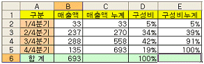
- 이중 축 혼합형
- 블럭 영영형
- 혼합형(꺽은선 - 세로 막대)
- 혼합형(세로 막대 - 영역)
(정답률: 30%)
22. 아래 시트의 "판매수량"에서 "판매수량"의 평균값 이상인 데이터만을 찾기 위한 고급필터의 조건으로 올바른 것은?
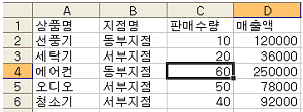
- 평균수량
=$C$2>=AVERAGE($C$2:$C$6) - 평균판매수량
=C$2>=AVERAGE($C$2:$C$6) - 평균수량
=C2>=AVERAGE($C$2:$C$6) - 판매수량
=C$2>=AVERAGE($C$2:$C$6)
(정답률: 39%)
23. 다음 중 엑셀의 [인쇄 미리 보기] 기능에 대한 설명으로 옳지 않은 것은?
- 작성한 워크시트를 프린터로 인쇄하기 전에 인쇄했을 때의 모양을 화면으로 미리 확인할 수 있는 기능이다.
- 마우스로 드래그하여 인쇄 여백 지정이 가능하다.
- [머리글/바닥글]을 입력하기 위한 [페이지 설정] 대화 상자로 들어갈 수 있다.
- 각 셀의 행 높이, 열 너비를 자유롭게 조절할 수 있다.
(정답률: 46%)
24. 다음 중 Excel 데이터를 웹페이지로 저장하거나 게시 될 때 유지되는 것으로 옳은 것은?
- 공유 통합 문서 정보
- 무늬 채우기
- 글자 크기
- 셀 메모
(정답률: 33%)
25. 다음 중 매크로에 관한 설명으로 옳지 않은 것은?
- 매크로 기록을 위해서 상대 참조를 선택할 수 있다.
- 바로 가기키를 이용하여 매크로를 실행할 수 있다.
- 매크로 저장위치를 "공유 매크로 통합 문서"로 지정할 수 있다.
- [도구]-[매크로]-[매크로]에서 매크로 이름을 선택한 후 편집을 실행하여 주석을 삽입할 수 있다.
(정답률: 32%)
26. [A1]셀의 값 "TR-A-80"을 [B1]셀에 "TR-A80"으로 바꾸어 표시하고자 할 때, 다음 중 옳지 않은 결과가 나오는 식은 어느 것인가?
- =REPLACE(A1,5,1,"")
- =CONCATENATE(LEFT(A1,4),MID(A1,6,2))
- =SUBSTITUTE(A1,"-","",5)
- =LEFT(A1,4)&RIGHT(A1,2)
(정답률: 44%)
27. 다음 화면은 쿼리마법사를 이용하여 외부 데이터베이스를 만드는 마지막 단계이다. 각 옵션에 대한 설명으로 잘못 된 것은?
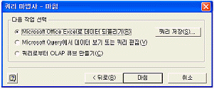
- Microsoft Excel로 데이터 되돌리기 : 외부 데이터베이스의 데이터를 엑셀 데이터로 변환시켜 준다.
- Microsoft Query에서 데이터 보기 또는 쿼리 편집 : 외부 데이터를 쿼리로 저장하면서 보기 및 편집 상태로 표시된다.
- 쿼리로부터 OLAP 큐브 만들기 : OLAP 큐브 마법사가 실행되며, 작성한 쿼리 데이터를 이용하여 OLAP 큐브파일을 만든다.
- 쿼리 저장 : 외부 데이터베이스를 쿼리 형식으로 바로 저장한다.
(정답률: 37%)
28. 다음 중 열려 있는 통합 문서의 모든 워크시트를 재계산하기 위한 기능 키로 옳은 것은?
- F1
- F2
- F4
- F9
(정답률: 51%)
29. 다음 중 스타일에 대한 설명으로 옳지 않은 것은?
- 셀에 적용할 서식의 종류를 미리 정의하여 놓은 것이다.
- 도형 개체의 스타일을 변경한 후 기본 도형으로 저장할 수 있다.
- 다른 통합 문서에 정의된 스타일을 사용할 수 있다.
- 스타일을 수정해도 이미 스타일이 적용된 셀들의 서식에는 영향을 주지 않는다.
(정답률: 62%)
30. 아래의 시트에서 [A2:A4] 영역의 값에 대하여 [B2:B4] 영역과 같이 표시되도록 하기 위한 사용자 지정 서식으로 옳은 것은?
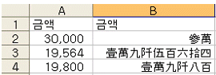
- [DBNum1]#,###
- [DBNum1]G/표준
- [DBNum2]G/표준
- [DBNum2]#,###
(정답률: 49%)
31. 아래 그림과 같이 사용자 정의 폼에서 3개의 텍스트 상자에 데이터를 입력하고 '입력' 버튼을 클릭하면 현재 워크시트에 데이터가 입력되도록 작성하였다. 다음 중 프로시저에 대한 설명으로 옳지 않은 것은?
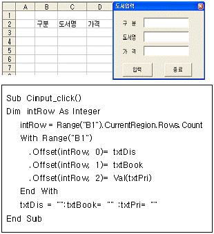
- intRow = Range("B1").CurrentRegion.Rows.Count는 [B1]셀을 기준으로 처음 Count의 값은 2 이다.
- .Offset(intRow,0) = txtDis 는 [B2] 셀에 txtDis 의 값을 입력한다.
- .Offset(intRow, 2) = Val(txtPri)는 문자 데이터가 입력되면 0 값이 입력된다.
- txtDis = "" : txtBook="" : txtPri=""은 초기화 시키는 작업으로 폼 화면에서 txtDis와 txtBook, txtPri는 빈칸으로 표시된다.
(정답률: 26%)
32. 다음 중 선택된 차트의 페이지 설정에 관한 설명 중 옳지 않은 것은?
- 차트를 선택한 상태에서 페이지 설정을 선택하면 페이지 설정 대화상자에서 시트 맵 대신 차트 맵이 나타난다.
- 차트의 일부분을 인쇄하기 위해서는 차트 탭에서 인쇄영역을 지정하여 준다.
- 머리글/바닥글을 이용하여 일반 시트 인쇄 방법과 동일하게 머리글 및 바닥글을 인쇄할 수 있다.
- 인쇄 품질을 '간단하게 인쇄' 또는 '흑백으로 인쇄'를 선택하여 출력을 할 수 있다.
(정답률: 29%)
33. 다음 중 피벗테이블 작성에 대한 설명으로 옳지 않은 것은?
- 피벗 차트 작성시 피벗 테이블도 함께 작성된다.
- 작성되어 있는 피벗 테이블의 레이아웃은 마우스로 드래그 하여 다시 수정할 수 있다.
- 작성된 피벗 테이블을 삭제하면 피벗 차트도 삭제된다.
- 피벗 테이블을 작성할 때 데이터로 외부 데이터나 다중 통합 범위를 지정할 수 있다.
(정답률: 56%)
34. 대출원금 3천만원을 연 이자율 6.5%로 3년 동안 매월 말 상환하려고 한다. 매월 불입 금액을 계산하는 함수식으로 옳은 것은? 단, 계산결과는 양수가 나오도록 함수식의 인수를 조정한다.
- =PMT(6.5%/12,3*12,-30000000)
- =PMT(6.5%,3*12,-30000000)
- =IPMT(6.5%/12,3*12,30000000)
- =IPMT(6.5%,3*12,30000000)
(정답률: 53%)
35. 수학식
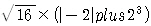
을 엑셀수식으로 바르게 표현한 것은?
- =POWER(16)*(ABS(-2)+SQRT(2,3))
- =SQRT(16)*(ABS(-2)+POWER(3,2))
- =SQRT(16)*(ABS(-2)+POWER(2,3))
- =POWER(16)*(ABS(-2)+SQRT(3,2))
(정답률: 68%)
36. 매크로 작업시마다 지정된 영역의 셀에 입력된 문자열 사이에 있는 공백을 제거하는 공백제거 매크로를 작성하고 실행하려고 한다. 다음 중 공백제거 매크로를 작성하고 실행하는 작업과정으로 옳은 것은?
- 매크로 작성 : 대상 셀의 영역지정 → 새 매크로 기록(매크로 이름 : 공백제거) → 바꾸기 대화상자에서 찾을 내용과 바꿀 내용 입력하고 '모두 바꾸기'를 선택하여 대상 셀의 공백제거 → 매크로 종료매크로 실행 : 대상 셀의 영역지정 → 공백제거 매크로 실행
- 매크로 작성 : 새 매크로 기록(매크로 이름 : 공백제거) → 공백이 있는 1개의 셀을 선정하여 공백제거 → 매크로 종료매크로 실행 : 대상 셀의 영역지정 → 공백제거 매크로 실행
- 매크로 작성 : 공백이 있는 첫 번째 셀 선택 → 새 매크로 기록(매크로 이름 : 공백제거) → 바꾸기 대화상자에서찾을 내용과 바꿀 내용 입력하고 '모두 바꾸기'를 선택하여 대상 셀의 공백제거 → 매크로 종료매크로 실행 : 대상 셀의 영역지정 → 공백제거 매크로 실행
- 매크로 작성 : 새 매크로 기록(매크로 이름 : 공백제거) → 대상 셀의 영역지정 → 바꾸기 대화상자에서 찾을 내용과 바꿀 내용 입력하고 '모두 바꾸기'를 선택하여 대상 셀의 공백제거 → 매크로 종료매크로 실행 : 대상 셀의 영역지정 → 공백제거 매크로 실행
(정답률: 31%)
37. 점수가 90이상이면 "우수", 그렇지 않으면 "양호"의 문자열을 반환하는 사용자 정의 함수 "FUNC판정"을 작성하려고 한다. 다음의 구문에서 문법과 의미로 보았을 때 옳은 부분은?
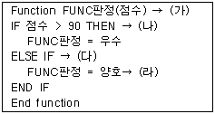
- 가
- 나
- 다
- 라
(정답률: 29%)
38. 다음 중 부분합에 대한 설명 중 옳지 않은 것은?
- 부분합에서 그룹으로 사용할 데이터는 반드시 오름차순으로 정렬되어 있어야 한다.
- 부분합에서는 합계, 평균, 개수 등의 함수 이외에도 다양한 함수를 선택할 수 있다.
- 부분합에서 데이터 아래에 요약을 표시할 수 있다.
- 부분합에서 그룹 사이에 페이지를 나눌 수 있다.
(정답률: 65%)
39. 목표값 찾기 기능을 이용하려고 한다. 다음 중 "평균이 90점이 되기 위해서 생물 성적이 몇 점이 되어야 하는가?"에 대한 목표값 찾기 대화 상자로 옳은 것은?
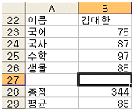
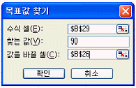
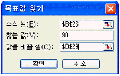
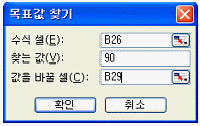
(정답률: 61%)
40. 다음 차트에 대한 설명으로 옳지 않은 것은?
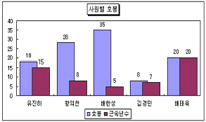
- 데이터 표식 항목 사이에 공백이 있도록 하기위하여 [간격 너비]에 0보다 큰 값을 입력하였다.
- 데이터 계열 항목 안에서 표식이 겹치도록 하기위하여 [겹치기]에 항목에 음수를 입력하였다.
- Y(값) 축의 [주 눈금선]이 선택되지 않았다.
- 데이터 레이블로 '값'이 선택되었다.
(정답률: 53%)
3과목: 데이터베이스 일반
41. 다음 보고서에 대한 설명으로 가장 옳지 않은 것은? 단, 이 보고서는 전체 4페이지이며, 현재 페이지는 2페이지이다.
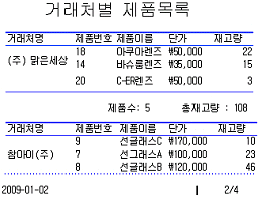
- '거래처명'을 표시하는 컨트롤은 '중복내용 숨기기' 속성이 예로 설정되어 있다.
- '거래처명'에 대한 그룹 머리글 영역이 만들어져 있고, 반복실행구역 속성이 '예'로 설정되어 있다.
- '거래처명'에 대한 그룹 바닥글 영역이 설정되어 있고, 요약 정보를 표시하고 있다.
- '거래처별 제품목록'이라는 제목은 '거래처명'에 대한 그룹 머리글 영역에 만들어져 있다.
(정답률: 42%)
42. 다음 중 탭 순서(Tab Order)에 대한 설명으로 가장 옳지 않은 것은?
- [탭]키나 [엔터] 키 등을 누를 때 컨트롤에 포커스가 옮겨가는 순서를 지정하는 것이다.
- 탭 이동시에 '탭 정지' 속성을 '예'로 설정한 컨트롤에만 포커스가 옮겨간다.
- 선이나 레이블, 명령 단추와 같은 컨트롤에는 탭 순서를 지정할 수 없다.
- 개별 컨트롤의 '탭 인덱스' 속성 값을 변경하여 탭 순서를 변경할 수 있다.
(정답률: 42%)
43. 디자인 보기에서 보고서를 보면 구역(section)을 확인할 수 있다. 다음 중 각 구역의 유형 및 용도의 설명으로 가장 적절하지 못한 것은?
- 보고서 머리글에는 로고, 보고서 제목과 같이 매 페이지마다 표시될 항목을 설정한다.
- 보고서 바닥글에는 합계나 개수와 같은 보고서의 요약 정보를 나타낼 수 있다.
- 페이지 바닥글은 페이지 번호와 출력 날짜와 같은 항목을 표시하는 데 사용한다.
- 그룹화된 보고서의 경우 레코드 그룹의 앞에 그룹 이름이나 그룹 합계 같은 정보를 삽입할 때 그룹 머리글에 설정한다.
(정답률: 55%)
44. 다른 테이블을 참조하는 외래 키(FK)에 대한 다음 중 설명 중 가장 옳은 것은?
- 외래 키 필드의 값은 유일해야 하므로 중복된 값이 입력될 수 없다.
- 외래 키 필드의 값은 널 값일 수 없으므로, 값이 반드시 입력되어야 한다.
- 한 테이블에서 특정 레코드를 유일하게 구별할 수 있는 속성이다.
- 하나의 테이블에는 여러 개의 외래키가 존재할 수 있다.
(정답률: 57%)
45. 매크로를 이용하여 외부의 응용 프로그램을 실행하려고 한다. 이 때 사용할 수 있는 가장 적절한 매크로 함수는 무엇인가?
- Runcommand
- RunMacro
- RunSQL
- RunApp
(정답률: 47%)
46. 조회 속성에 대한 다음 설명 중 가장 옳지 않은 것은?
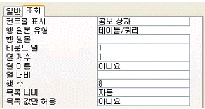
- 다른 테이블에 있는 내용을 목록으로 표시하려면 '행 원본 유형'을 '테이블/쿼리'로 설정한다.
- '서울', '부산', '대전', '광주'와 같은 목록을 직접 지정하려면 '행 원본 유형'을 '값 목록'으로 설정한다.
- 열의 개수가 여러 개인 경우에 두 번째 열을 표시하고자 한다면 '바운드 열'을 2로 지정한다.
- '목록값만 허용' 속성을 '예'로 지정하면, 목록 이외의 값은 입력할 수 없다.
(정답률: 37%)
47. 다음 중 하위 폼에 대한 설명으로 옳지 않은 것은?
- 기본 폼과 하위 폼을 연결할 필드의 데이터 형식은 같거나 호환되어야 한다.
- 하위 폼이란 특정한 폼 내에 들어 있는 또 하나의 폼을 말한다.
- 두 개 이상의 연결 필드를 지정할 때는 필드 이름을 세미콜론(;)으로 구분하여야 한다.
- 기본 폼과 하위 폼에는 사용하는 테이블 간에는 관계가 설정되어 있어야 한다.
(정답률: 30%)
48. 비디오 대여점을 위한 데이터베이스를 구성하여 '고객'별로 '대여일'과 '반납일'을 관리하려고 한다. 고객들은 여러 비디오를 대여하며, 한 비디오는 여러 고객들에게 대여된다. 다음의 테이블 설계 중에서 가장 옳은 것은? (단, 밑줄은 기본키를 의미함)(문제 오류로 여기서는 1번을 정답처리 합니다.)
- 고객(고객번호, 이름, 연락처)
비디오(비디오코드, 영화제목, 출시일)
대여(고객번호, 비디오코드, 대여일, 반납일, 대여금액) - 대여(고객번호, 이름, 연락처, 대여비디오코드, 대여일, 반납일, 대여금액)
비디오(비디오코드, 영화제목, 출시일) - 고객(고객번호, 이름, 연락처, 대여비디오코드)
비디오(비디오코드, 영화제목, 출시일)
대여(고객번호, 비디오코드, 대여일, 반납일, 대여금액) - 대여(고객번호, 이름, 연락처, 대여일, 반납일, 대여금액)
비디오(비디오코드, 고객번호, 영화제목, 출시일)
(정답률: 66%)
49. [학생] 테이블에서 '점수'가 60 이상인 학생의 인원수를 구하는 예로 적절한 것은?(단, '학번'필드는 [학생]테이블의 기본 키이다.)
- =Dcount("[학생]","[학번]","[점수]>=60")
- =Dcount("[학번]","[학생]","[점수]>=60")
- =Dlookup("[학생]","[학번]","[점수]>=60")
- =Dlookup("*","[학생]","[점수]>=60")
(정답률: 50%)
50. 다음 중 텍스트 상자(text box) 컨트롤에 대한 설명으로 가장 옳지 않은 것은?
- 어떤 값을 입력받거나 표시하는 경우에 주로 사용하는 컨트롤이다.
- 컨트롤 원본에 '='로 시작하는 수식을 지정하여 계산 컨트롤을 만들 수 있다
- 계산 컨트롤에 값을 입력하면 관련 필드의 값이 변경된다.
- 테이블의 필드에 바운드된 경우, 컨트롤의 값을 수정하면 필드의 값도 수정될 수 있다.
(정답률: 30%)
51. 보고서에서 '납품수량'이 100보다 크거나 같으면 나머지 필드에 대해서도 음영이 표시되도록 설정하고자 한다. 다음 중 조건부 서식이 옳게 설정된 것은?
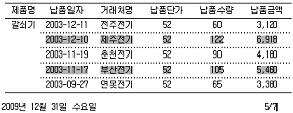
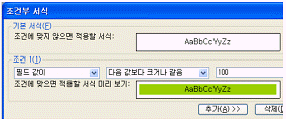
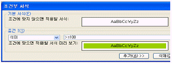
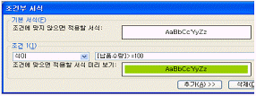
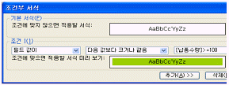
(정답률: 40%)
52. 다음 중 특정 필드에 입력할 데이터의 종류나 범위를 지정하여 입력 데이터를 제한할 때 사용하는 속성으로 옳은 것은?
- 유효성 검사 규칙
- 입력마스크
- 인덱스
- 유효성 검사 메시지
(정답률: 53%)
53. 다음 중 보고서의 그룹화에 대한 설명으로 가장 옳지 않은 것은?
- 필드나 식을 이용하여 필드가 표시되는 위치를 지정할 수 있다.
- 숫자 데이터는 일정한 간격별로 그룹화 할 수 있다.
- 날짜 데이터는 년도별, 분기별, 월별, 주별, 일별 등으로 그룹화 할 수 있다.
- 문자열 데이터는 접두 문자(예, 처음 2글자)를 기준으로 그룹화 할 수 있다.
(정답률: 24%)
54. '값'테이블의 필드 A가 1, 2, 3, 4, 5의 값을 가지고 있고, '을' 테이블의 필드 A가 0, 2, 3, 4, 6의 값을 가지고 있다고 가정할 때 다음 SQL 구문의 실행 결과는?
- 2,3,4
- 0,1,2,3,4,5,6
- 1, 5, 6
- 0, 1, 5, 6
(정답률: 60%)
55. 다음 문자열 함수의 결과 값으로 적절한 것은?
- 0
- 1
- 4
- 8
(정답률: 57%)
56. 다음 중 관계형 데이터베이스의 테이블에 대한 설명으로 가장 옳지 않은 것은?
- 테이블에는 동일한 필드명이 두 개 이상 존재할 수 없다.
- 속성들 간의 순서를 유지하는 것이 중요하다.
- 도메인을 벗어나는 값을 가진 튜플(레코드)이 존재해서는 안 된다.
- 레코드들 간의 순서는 의미가 없다.
(정답률: 43%)
57. [성적] 테이블에서 국어, 영어, 수학 필드의 평균값이 95이상인 학생수를 반별로 검색하려고 한다. 다음 중 적당한 질의문은?
- Select 반, count(학번) From 성적 Where (국어+영어+수학)/3>=95;
- Select 반, count(학번) From 성적 Where (국어+영어+수학)/3>=95 group by 반;
- Select 반, count(학번) From 성적 group by 반 having (국어+영어+수학)/3>=95;
- Select 반, count(학번) From 성적 Where (국어+영어+수학)/3>=95 having 반;
(정답률: 39%)
58. 다음 중 Visual Basic에서 Microsoft Access 매크로 함수를 실행할 수 있는 액세스 개체는 무엇인가?
- Application 개체
- Form 개체
- Docmd 개체
- CurrenData 개체
(정답률: 50%)
59. 다음 중 인덱스에 대한 설명으로 가장 옳지 않은 것은?
- 찾기와 정렬 속도가 빨라진다.
- 데이터의 업데이트 속도가 빨라진다.
- 많은 양의 데이터를 가진 테이블에 더 유용하다
- 단일 필드 인덱스와 다중 필드 인덱스가 있다.
(정답률: 59%)
60. 사원(사번, 성명, 거주지, 기본급, 부서명) 테이블에서 거주지가 '서울'이나 '인천'이 아닌 사원 중에 기본급의 최대값을 구하는 SQL 명령으로 맞는 것은?
- SELECT MAX(기본급) AS [최대값] FROM 사원 WHERE 거주지 NOT IN ('서울', '인천');
- SELECT [최대값] AS MAX(기본급) FROM 사원 WHERE(거주지 <> '서울') OR (거주지 <> '인천');
- SELECT MAX(기본급) AS [최대값] FROM WHERE(거주지 <> '서울') OR (거주지 <> '인천');
- SELECT [최대값] AS MAX(기본급) FROM 사원 WHERE 거주지 NOT IN('서울','인천');
(정답률: 37%)